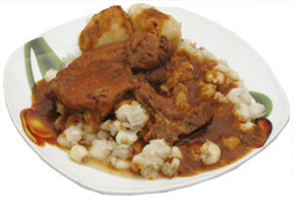

Fritanga
Ingredientes
- 2 kilos de carne de cerdo
- 1/2 taza de ají colorado molido
- 3 dientes de ajo
- 1 cucharilla de orégano
- taza de chuño remojado y cocido
- 6 papas peladas y cocidas, sal, pimienta y comino.
Preparación
Cocinar la carne troceada con 2 tazas de agua hasta que el agua se evapore, dejar dorar en su misma grasa. Agregar el ají molido, los ajos, el orégano, sal, pimienta, comino y dejar cocinar por unos minutos. Agregar el chuño, las papas y continuar la cocción hasta que todo se impregne con el ají. Servir la carne con el chuño, las papas y acompañar con llajwa.